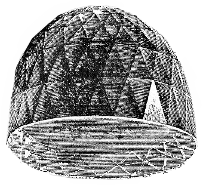
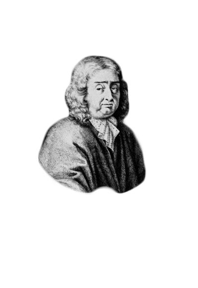

The celebrated diamond which has been generally deemed unparalleled in size and beauty.

A 787 carats (157.4 g) rough diamond

At that time Tavernier wrote in his Six Voyages: “The first piece that Akel Khan (Chi- ef Keeper of the King’s jewels) placed in my hands was the great diamond, which is rose cut, round and very high on one side. On the lower edge there is a slight crack, and a little flaw in it. Its water is fine, and weighs 319-1/2 ratis, which makes 280 of our carats, the rati being ⅞th of a carat.”
To Shah Jahan, the 5th Mogul emperor from Emir Jemla.
The Great Mogul Diamond’s story begins around 1650 with its discovery as a rough diamond, most probably in the Kollur Mine in the Golconda region of southern India. Weighing in at a whopping 787 ½ carats, the diamond’s impressive size made it a perfect gift of diplomacy when Emir Jemla, a very wealthy general, used it in seeking an alliance between two great families.
Later, the Great Mogul Diamond became part of the spoils of war when India was invaded and Delhi sacked by the Persian ruler Nadir Shah.
Nadir Shah, the Persian ruler returned with the stone to his home in Isfahan in 1739. However, Nadir Shah’s ownership proved shorted-lived. He was assassinated in 1747 and the stone disappeared.There are many legends regarding its fate. Some believed it to be the stone from which the Koh-i-noor was cut, or perhaps the Darya-ye-noor, but most popularly it is speculated to be the Orlov Diamond because its bluish tinge and rose cut are similar to the Great Mogul Diamond. A more probable explanation is that it was stolen and cut into smaller gems to disguise its origin.No one knows for sure.
No one knows for sure. Where are you, Indiana Jones?
This is the kind of story that would make a great Indiana Jones movie – solving the mystery of the Great Mogul Diamond.Its last owner murdered, the famed gem has not been seen for centuries and to this day its whereabouts remain unknown. Still, theories swirl about its fate. Who stole the gem? Is it now part of someone’s private collection? Perhaps it is truly lost, patiently waiting somewhere on this earth to be re-discovered. Or maybe it has gone under the knife, cut down to disguise its identity.